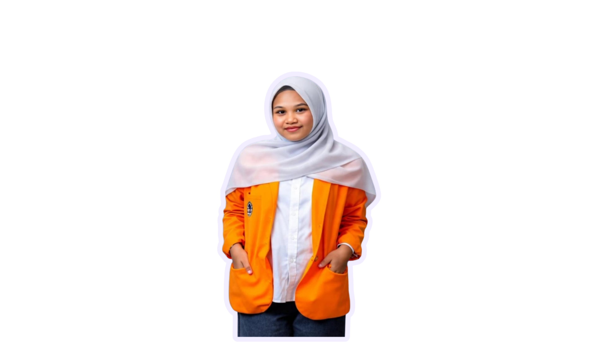

Nama lengkap Husnul Muawiah, mahasiswa semester 3 Program Studi Teknik Komputer di Universitas Negeri Makassar, salah satu alumni dari SMA Negeri 4 Sinjai. Saat ini, saya sedang belajar dan mengembangkan kemampuan di bidang teknologi, khususnya pemrograman dan pengembangan web. Saya senang mempelajari hal-hal baru dan terus berusaha meningkatkan kemampuan serta pengalaman saya di dunia teknologi.

Saya senang belajar dari berbagai pengalaman yang saya jalani. Saya memiliki rasa ingin tahu yang tinggi, senang mencoba hal-hal baru, dan selalu berusaha menambah wawasan serta mengembangkan diri. Saya percaya bahwa setiap pengalaman dapat memberikan pelajaran baru dan membantu saya menjadi pribadi yang lebih baik.